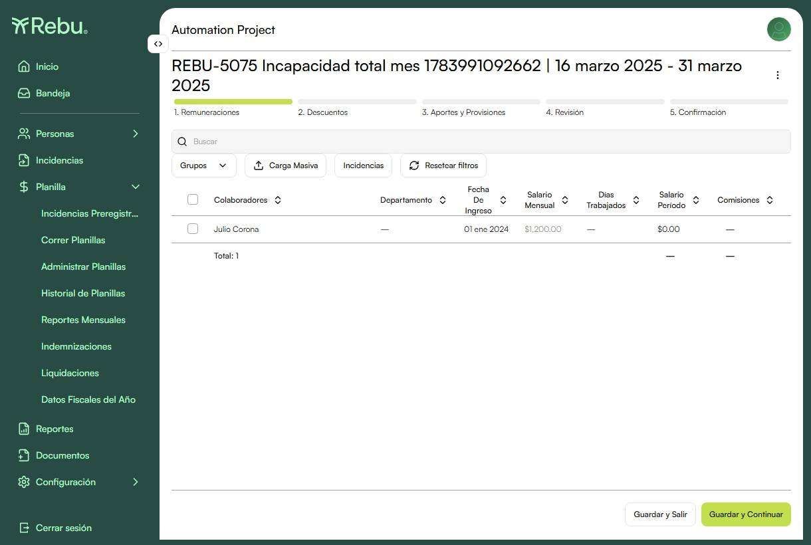
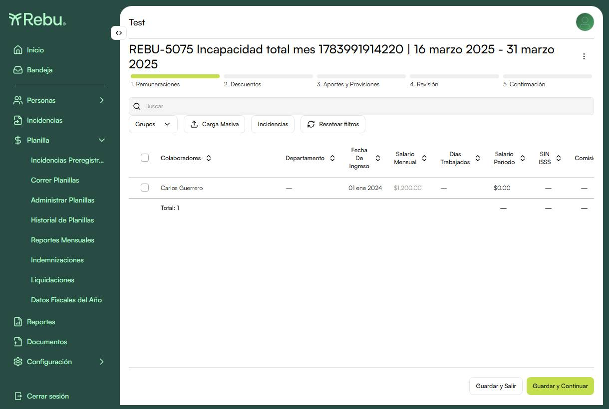

REBU-5075Ausencias que cubren el mes completo → días trabajados 0 y salario $0 (edge case base-30)
1 / 1 ✓▼
ID
Caso de prueba
Status
REBU-5075
Incapacidad total del mes → días trabajados = 0 y salario $0 en las 6 quincenas (feb–abr 2025), incluida la quincena del bug Mar Q2 (16-31)
críticoapiedge-caseregresión
PASS
Precondiciones
Colaborador EMP activo, fecha de ingreso 01-ene-2024, salario $1,200, AFP Confía, planilla quincenal.
Tipos de incapacidad del catálogo: "Enfermedad o riesgo común" y "Riesgo empresarial o accidente laboral".
Setup
Crear colaborador y planilla quincenal (builder `createPayrollScenario`).
Por cada mes (feb, mar, abr 2025) crear 2 incapacidades que cubren el mes completo: "Enfermedad o riesgo común" del 1 al 10, y "Riesgo empresarial o accidente laboral" del 11 al fin de mes.
Enviar a planilla las incidencias pendientes del colaborador antes de leer cada quincena.
Pasos
Correr cada quincena (Feb Q1, Feb Q2, Mar Q1, Mar Q2, Abr Q1, Abr Q2).
En el paso de Remuneraciones, revisar Días Trabajados y Salario del período del colaborador.
Finalizar la quincena (4 changeSteps) y continuar con la siguiente.
Resultado esperado
En las 6 quincenas los días trabajados quedan en 0 y el salario del período en $0.00, sin valores negativos. La quincena Mar Q2 (16-31, 16 días calendario sobre base 30) — que antes del fix producía −1 día y salario negativo — también queda en 0 / $0. Resultado de la corrida (UAT company 2): Feb Q1 ✅, Feb Q2 ✅, Mar Q1 ✅, Mar Q2 ✅, Abr Q1 ✅, Abr Q2 ✅.
Evidencia
01 — Remuneraciones · Mar Q2 (16-31 mar 2025)

Colaborador con incapacidad total del mes: Salario Mensual $1,200.00 → Salario del período $0.00 y Días Trabajados sin valor negativo. Antes del fix esta quincena (16 días sobre base 30) mostraba −1 día y salario negativo.
Status
PASSHistoria sin casos TC formales — cobertura automatizada del fix del bug base-30
Este release solo contiene la verificación automatizada del edge case de ausencias (REBU-5075).
—
REBU-5075Ausencias que cubren el mes completo → días trabajados 0 y salario $0 (edge case base-30)
1 / 1 ✓▼
ID
Caso de prueba
Status
REBU-5075
Incapacidad total del mes → días trabajados = 0 y salario $0 en las 6 quincenas (feb–abr 2025), incluida la quincena del bug Mar Q2 (16-31)
críticoapiuiedge-case
PASS
Precondiciones
Colaborador EMP activo, fecha de ingreso 01-ene-2024, salario $1,200, AFP Confía, planilla quincenal.
Tipos de incapacidad del catálogo: "Enfermedad o riesgo común" y "Riesgo empresarial o accidente laboral".
Setup
Crear colaborador y planilla quincenal (builder `createPayrollScenario`).
Por cada mes (feb, mar, abr 2025) crear 2 incapacidades que cubren el mes completo.
Enviar a planilla las incidencias pendientes antes de leer cada quincena.
Pasos
Correr cada quincena (Feb Q1, Feb Q2, Mar Q1, Mar Q2, Abr Q1, Abr Q2).
En Remuneraciones, revisar Días Trabajados y Salario del período.
Finalizar la quincena y continuar con la siguiente.
Resultado esperado
En las 6 quincenas los días trabajados quedan en 0 y el salario del período en $0.00, sin negativos. Corrida en Producción (company 21, tenant Test): Feb Q1 ✅, Feb Q2 ✅, Mar Q1 ✅, Mar Q2 ✅, Abr Q1 ✅, Abr Q2 ✅.
Evidencia
01 — Remuneraciones · Mar Q2 (16-31 mar 2025) · Producción

Producción (tenant Test): colaborador con incapacidad total del mes — Salario Mensual $1,200.00 → Salario del período $0.00, días trabajados sin valor negativo.
Status
PASSHistoria sin casos TC formales — cobertura automatizada del fix del bug base-30